📈 Présentation du modèle de trading adaptatif#
🯠Objectif de cette partie#
Dans cette section, on présente la logique de fonctionnement du modèle de trading développé dans ce projet.
L’idée principale est simple :
Chaque jour, le modèle s’adapte aux données les plus récentes pour décider s’il faut acheter, vendre ou rester neutre.
On va donc expliquer :
comment la stratégie s’ajuste dans le temps,
quels paramètres sont recalibrés quotidiennement,
et comment tout cela s’inscrit dans une boucle de décision automatisée.
🔠La boucle quotidienne#
Chaque jour, le modèle suit les étapes suivantes :
Il s’entraîne sur les données des N dernières périodes (souvent 1 ou 2 mois).
Il teste plusieurs combinaisons de paramètres via une recherche aléatoire :
poids appliqués aux scores de sentiment,
seuils d’achat et de vente,
pondération des tweets vérifiés.
Il sélectionne la configuration qui aurait donné le meilleur résultat sur l’historique.
Il utilise cette configuration pour générer un signal pour la journée en cours.
Il exécute le trade (achat, vente ou rien).
Il met à jour le portefeuille et enregistre les résultats.
⚙️ Ce que le modèle ajuste chaque jour#
Élément optimisé |
Rôle dans la décision |
|---|---|
|
Poids appliqués aux différents scores de sentiment |
|
Seuil au-dessus duquel un achat est déclenché |
|
Seuil en dessous duquel une vente est déclenchée |
|
Pondération supplémentaire pour les tweets vérifiés |
🔄 Schéma du processus#

Ce schéma résume la boucle quotidienne : entraînement, optimisation, décision, exécution — puis on passe au jour suivant.